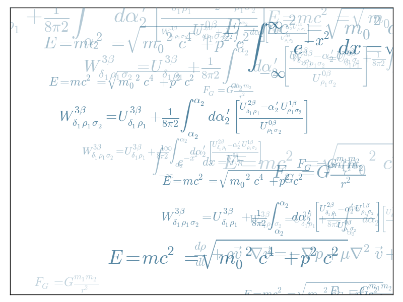

Demo text printing¶
A example showing off elaborate text printing with matplotlib.
Python source code: plot_text_ex.py
import numpy as np
import matplotlib.pyplot as plt
eqs = []
eqs.append((r"$W^{3\beta}_{\delta_1 \rho_1 \sigma_2} = U^{3\beta}_{\delta_1 \rho_1} + \frac{1}{8 \pi 2} \int^{\alpha_2}_{\alpha_2} d \alpha^\prime_2 \left[\frac{ U^{2\beta}_{\delta_1 \rho_1} - \alpha^\prime_2U^{1\beta}_{\rho_1 \sigma_2} }{U^{0\beta}_{\rho_1 \sigma_2}}\right]$"))
eqs.append((r"$\frac{d\rho}{d t} + \rho \vec{v}\cdot\nabla\vec{v} = -\nabla p + \mu\nabla^2 \vec{v} + \rho \vec{g}$"))
eqs.append((r"$\int_{-\infty}^\infty e^{-x^2}dx=\sqrt{\pi}$"))
eqs.append((r"$E = mc^2 = \sqrt{{m_0}^2c^4 + p^2c^2}$"))
eqs.append((r"$F_G = G\frac{m_1m_2}{r^2}$"))
plt.axes([0.025, 0.025, 0.95, 0.95])
for i in range(24):
index = np.random.randint(0, len(eqs))
eq = eqs[index]
size = np.random.uniform(12, 32)
x,y = np.random.uniform(0, 1, 2)
alpha = np.random.uniform(0.25, .75)
plt.text(x, y, eq, ha='center', va='center', color="#11557c", alpha=alpha,
transform=plt.gca().transAxes, fontsize=size, clip_on=True)
plt.xticks(())
plt.yticks(())
plt.show()
Total running time of the example: 0.10 seconds ( 0 minutes 0.10 seconds)